리눅스마스터-2급 (2020-10-10 기출문제)
1과목: 리눅스 운영 및 관리
1. 다음 중 chown명령어를 사용하여 소유권 변경 시참조하는 파일로 가장 알맞은 것은?
- ~/.profile
- /etc/passwd
- /etc/shadow
- /etc/default/useradd
(정답률: 71%)

2. 다음 중 특수권한이 설정되어 있는 파일로 틀린 것은?
- /bin/su
- /dev/null
- /bin/mount
- /usr/bin/passwd
(정답률: 72%)
3. 소유그룹 변경 명령어인 chgrp 명령어를 이용하여 원본 파일의 소유권은 그대로 둔 채 심볼릭링크 파일의 그룹 소유권만 변경하려고 한다. 다음 중 해당 명령에 사용되는 옵션으로 알맞은 것은?
- -f
- -s
- -h
- -g
(정답률: 46%)
4. 각 사용자의 디스크 사용량을 제한하려고 한다. 다음 중 디스크 쿼터를 설정하는 명령어의 순서로 알맞은 것은?
- repquota → edquota → quotacheck → quotaon
- quotaon → quotacheck → edquota → repquota
- quotacheck → edquota → quotaon → repquota
- edquota → quotacheck → quotaon → repquota
(정답률: 68%)
5. 다음 중 특수 권한에 대한 설명으로 틀린 것은?
- Set-UID는 소유자 권한 부분의 x자리에 s로 표시되며, 보안을 강화하기 위해 설정한다.
- 숫자 모드의 경우 천의자리가 Set-UID는 4, Set-GID는 2, Sticky-Bit은 1의 값을 갖는다.
- /tmp에 설정되어 있는 권한은 Sticky-Bit으로 일시적 파일 생성 및 삭제가 필요할 때 주로 이용된다.
- Set-GID는 권한이 설정된 디렉터리에 사용자들이 파일이나 디렉터리를 생성하면 사용자가 속한 그룹상관없이 디렉터리소유그룹으로 만들어 진다.
(정답률: 55%)
6. 다음 중 eject 명령어 수행 시 자동으로 수행되는 사전 명령어로 알맞은 것은?
- fsck
- e2fsck
- mount
- umount
(정답률: 60%)
7. 다음 중 ( 괄호 ) 안에 들어갈 내용으로 알맞은 것은?
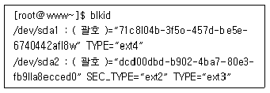
- GID
- UUID
- DISKID
- WWWN
(정답률: 75%)
8. 다음 중 리눅스에서 사용하는 파일시스템 유형으로 틀린 것은?
- ext
- vfat
- ntfs
- smb
(정답률: 55%)
9. 다음 중 fsck명령 수행 시 손상된 디렉터리나 파일 수정을 위한 임시 디렉터리로 알맞은 것은?
- /lost.found
- /lost-found
- /lost_found
- /lost+found
(정답률: 69%)
10. 다음 중 chmod 명령어를 이용한 허가권 변경시 하위 디렉터리내 파일의 허가권까지 모두 변경할 수 있는 옵션으로 알맞은 것은?
- -v
- -c
- -f
- -R
(정답률: 83%)
11. 다음 설명에 해당하는 셸로 알맞은 것은?
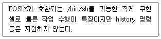
- ksh
- csh
- tcsh
- dash
(정답률: 54%)
12. 특정 사용자의 로그인 시에 부여되는 셸 정보를 확인하려고 할 때 파일명으로 알맞은 것은?
- /etc/shells
- /etc/passwd
- /etc/shadow
- /etc/login.defs
(정답률: 66%)
13. 다음 중 등장 시기가 오래된 것부터 나열한 순서로 알맞은 것은?
- csh → tcsh → bash
- bash → csh → tcsh
- csh → bash → tcsh
- bash → tcsh → csh
(정답률: 71%)
14. 다음 중 바로 직전에 내린 명령을 재실행할 때 사용하는 명령으로 알맞은 것은?
- !1
- !0
- !!
- history -1
(정답률: 76%)
15. 다음 설명에 해당하는 파일로 가장 알맞은 것은?
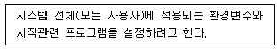
- /etc/profile
- /etc/bashrc
- ~/.bash_profile
- ~/.bash_bashrc
(정답률: 51%)
16. 다음 ( 괄호 ) 안에 들어갈 내용으로 알맞은 것은?
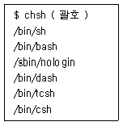
- -s
- -l
- -L
- /etc/shells
(정답률: 75%)
17. 다음 중 사용자의 프롬프트를 변경할 때 사용하는 환경변수로 알맞은 것은?
- PS
- PS1
- PS2
- PROMPT
(정답률: 71%)
18. 다음 중 앨리어스(alias)가 설정된 ls를 원래 명령어가 계속 실행되도록 해제할 때의 명령으로 알맞은 것은?
- ＼ls
- alias ls
- ualias ls
- unalias ls
(정답률: 75%)
19. 사용 중인 bash 프로세스의 PID 1222일 때 nice 명령의 사용법으로 알맞은 것은?(오류 신고가 접수된 문제입니다. 반드시 정답과 해설을 확인하시기 바랍니다.)
- nice -20 bash
- nice -20 1222
- nice bash
- nice 1222
(정답률: 40%)
20. 다음 중 번호값이 가장 큰 시그널명으로 알맞은 것은?
- SIGINT
- SIGQUIT
- SIGTSTP
- SIGCONT
(정답률: 60%)
21. 다음 설명으로 가장 알맞은 것은?
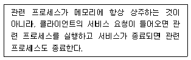
- fork
- inetd
- daemon
- standalone
(정답률: 55%)
22. 다음 ( 괄호 ) 안에 들어갈 내용으로 알맞은 것은?
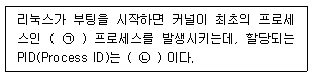
- ㉠ init, ㉡ 0
- ㉠ init, ㉡ 1
- ㉠ inetd, ㉡ 0
- ㉠ inetd, ㉡ 1
(정답률: 69%)
23. 다음 중 백업 스크립트가 30분 주기로 실행되도록 crontab에 설정하는 내용으로 알맞은 것은?
- */30 * * * * /etc/backup.sh
- * */30 * * * /etc/backup.sh
- * * */30 * * /etc/backup.sh
- * * * */30 * /etc/backup.sh
(정답률: 82%)
24. 다음 ( 괄호 ) 안에 들어갈 내용으로 알맞은 것은?
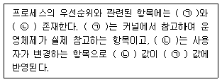
- ㉠ NI, ㉡ PRI
- ㉠ PRI, ㉡ NI
- ㉠ inetd, ㉡ exec
- ㉠ inetd, ㉡ fork
(정답률: 64%)
25. 다음 설명에 해당하는 내용으로 알맞은 것은?
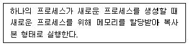
- fork
- exec
- foreground process
- background process
(정답률: 73%)
26. PID가 513인 프로세스를 종료시키기 위해 ‘kill 513'을 실행하였지만 실패한 상태이다. 다음 중 해당 프로세스를 종료시키기 위해 ( 괄호 ) 안에 들어갈 내용으로 알맞은 것은?
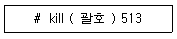
- 9
- 15
- -9
- -15
(정답률: 79%)
27. 다음 중 백그라운드로 실행 중인 작업번호가 2인 프로세스를 포어그라운드로 전환할 때 사용하는 명령으로 알맞은 것은?
- bg &2
- bg %2
- fg &2
- fg %2
(정답률: 69%)
28. 다음 중 백그라운드 프로세스로 실행시키기 위한 기호로 알맞은 것은?
- %
- $
- @
- &
(정답률: 75%)
29. 다음 설명과 같은 경우 가장 사용하기 적합한 편집기로 알맞은 것은?
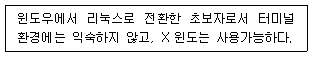
- vi
- nano
- gedit
- emacs
(정답률: 72%)
30. 원격지에서 vi편집기를 이용하여 lin.txt 파일을 편집 중에 네트워크 단절로 중단되었다. 작업중이던 파일 내용을 불러오려고 할 때 ( 괄호 ) 안에 들어갈 내용으로 알맞은 것은?
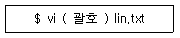
- +
- -s
- -r
- -R
(정답률: 62%)
31. 다음 중 pico 편집기에서 현재 커서가 위치한 줄의 처음으로 커서를 이동시키는 키 조합(key stroke)으로 알맞은 것은?
- [Ctrl]+[a]
- [Ctrl]+[e]
- [Ctrl]+[i]
- [Ctrl]+[o]
(정답률: 65%)
32. 다음 설명에 해당하는 편집기로 알맞은 것은?
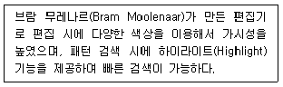
- vim
- pico
- nano
- emacs
(정답률: 75%)
33. 다음 중 emacs를 개발한 사람으로 알맞은 것은?
- 빌 조이
- 리처드 스톨만
- 리누스 토발즈
- 아보일 카사르
(정답률: 73%)
34. 다음 중 vi 편집기 실행 후 명령모드에서 입력 모드로 전환하는 키로 틀린 것은?
- a
- e
- i
- o
(정답률: 67%)
35. 다음 설명과 같은 경우 프로그램 설치 방법으로 가장 알맞은 것은?
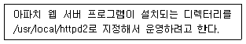
- yum 명령으로 설치되는 디렉터리를 지정한 후에 설치한다.
- apt-get 명령으로 설치되는 디렉터리를 지정한 후에 설치한다.
- 소스 파일을 다운로드하여 디렉터리를 지정한 후에 설치한다.
- rpm 파일을 다운로드하여 디렉터리를 지정한 후에 설치한다.
(정답률: 54%)
36. 다음 중 수세 리눅스에서 사용하는 온라인 패키지 관리 기법으로 알맞은 것은?
- yum
- apt-get
- yast
- zypper
(정답률: 71%)
37. 다음 중 yum 명령을 사용한 작업 이력을 확인하는 명령으로 알맞은 것은?
- yum list
- yum install list
- yum history list
- yum command list
(정답률: 74%)
38. 다음 ( 괄호 ) 안에 들어갈 내용을 알맞은 것은?
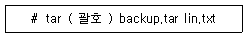
- cvf
- rvf
- xvf
- tvf
(정답률: 46%)
39. 다음 그림에 해당하는 명령어와 옵션으로 알맞은 것은?
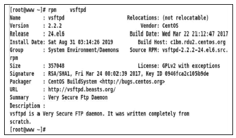
- rpm -q vsftpd
- rpm -qi vsftpd
- rpm -qd vsftpd
- rpm -V vsftpd
(정답률: 61%)
40. 다음 중 동일한 소스 파일을 묶어서 압축했을 때 파일의 크기가 가장 크게 생성되는 파일로 알맞은 것은?
- php-7.4.2.tar.Z
- php-7.4.2.tar.bz2
- php-7.4.2.tar.gz
- php-7.4.2.tar.xz
(정답률: 63%)
41. 다음 중 apt-get 명령어를 통해 패키지를 업데이트 할 때 가장 관계가 깊은 파일로 알맞은 것은?
- /etc/sources.conf
- /etc/yum.conf
- /etc/apt/sources.list
- /var/cache/yum
(정답률: 66%)
42. 다음은 압축 파일을 해제하는 과정이다. ( 괄호 ) 안에 들어갈 내용을 알맞은 것은?
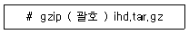
- -d
- -r
- -u
- -v
(정답률: 46%)
43. 다음 중 lin.txt라는 문서 파일을 출력한 후에 삭제하는 명령으로 알맞은 것은?
- lp -r lin.txt
- lp -d lin.txt
- lpr -r lin.txt
- lpr -d lin.txt
(정답률: 46%)
44. 다음 ( 괄호 ) 안에 들어갈 내용으로 알맞은 것은?
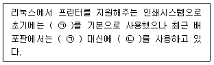
- ㉠ LPD, ㉡ LPRng
- ㉠ LPRng, ㉡ LPD
- ㉠ LPRng, ㉡ CUPS
- ㉠ CUPS, ㉡ LPRng
(정답률: 65%)
45. 다음 중 CentOS 6 버전에서 사용하는 X 윈도기반의 프린터 설정 명령으로 알맞은 것은?
- printconf
- printtool
- system-config-printer
- redhat-config-printer
(정답률: 73%)
46. 다음 제시된 프린터 관련 명령어 중 나머지 셋과 비교해서 다른 계열에 속하는 명령으로 알맞은 것은?
- lp
- lpc
- lpq
- lpr
(정답률: 64%)
47. 다음 중 스캐너를 사용하기 위해서 설치해야할 패키지로 알맞은 것은?
- OSS
- SANE
- ALSA
- CUPS
(정답률: 75%)
48. 다음 설명에 해당하는 명령으로 알맞은 것은?
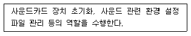
- alsactl
- alsamixer
- cdparanoia
- aplay
(정답률: 67%)
2과목: 리눅스 활용
49. 다음 중 X 윈도 서버로 사용되는 X.org에 적용된 라이선스로 알맞은 것은?
- GPL
- BSD
- MIT
- Apache
(정답률: 49%)
50. 다음 중 X 윈도 관련 프로그램의 종류가 나머지 셋과 다른 것은?
- KDM
- GDM
- XDM
- LXDE
(정답률: 56%)
51. 다음 설명에 해당하는 내용으로 알맞은 것은?
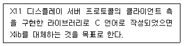
- Qt
- GTK+
- Xaw
- XCB
(정답률: 62%)
52. 다음 설명과 같은 경우 관련 설정을 하는 절차로 알맞은 것은?
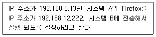
- 시스템 A의 DISPLAY=“192.168.5.13:0.0”로 변경한다.
- 시스템 A의 DISPLAY=“192.168.12.22:0.0”로 변경한다.
- 시스템 B의 DISPLAY=“192.168.5.13:0.0”로 변경한다.
- 시스템 B의 DISPLAY=“192.168.12.22:0.0”로 경한다.
(정답률: 68%)
53. 다음 중 X 서버에 접근할 수 있는 클라이언트를 IP 주소 기반으로 제어할 때 사용하는 명령으로 알맞은 것은?
- xauth
- xhost
- Xauthority
- .Xauthority
(정답률: 68%)
54. 다음 중 프레젠테이션(Presentation) 프로그램으로 알맞은 것은?
- LibreOffice Calc
- LibreOffice Draw
- LibreOffice Writer
- LibreOffice Impress
(정답률: 74%)
55. 다음 중 그림 파일인 png을 불러오기 위한 프로그램으로 거리가 먼 것은?
- eog
- gimp
- totem
- ImageMagick
(정답률: 67%)
56. 다음 중 부팅 시 X 윈도가 실행되도록 /etc/inittab 파일을 수정하는 항목값으로 알맞은 것은?
- id:3:initdefault:
- id:4:initdefault:
- id:5:initdefault:
- id:6:initdefault:
(정답률: 70%)
57. 다음과 같은 조건일 때 설정되는 네트워크 주소값으로 알맞은 것은?
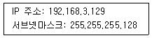
- 192.168.3.0
- 192.168.3.126
- 192.168.3.127
- 192.168.3.128
(정답률: 59%)
58. 다음 IPv4의 B 클래스 대역에 할당된 사설 IP 주소의 범위로 알맞은 것은?
- 171.16.0.0 ∼ 171.31.255.255
- 172.16.0.0 ∼ 172.31.255.255
- 173.16.0.0 ∼ 173.31.255.255
- 174.16.0.0 ∼ 174.31.255.255
(정답률: 74%)
59. 다음 설명에 해당하는 netstat 명령의 상태값(state)으로 알맞은 것은?
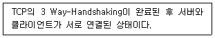
- LISTEN
- SYN_RECEIVED
- ESTABLISHED
- SYS-SENT
(정답률: 65%)
60. 다음 중 이더넷 카드에 연결된 케이블의 상태를 확인할 수 있는 명령으로 알맞은 것은?
- ss
- ip
- route
- mii-tool
(정답률: 53%)
61. 다음 중 ftp에서 데이터 전송 시에 사용하는 포트 번호로 알맞은 것은?
- 20
- 21
- 22
- 23
(정답률: 57%)
62. 다음 중 시스템에 장착된 이더넷 카드의 MAC 주소를 확인할 때 사용하는 명령으로 알맞은 것은?
- route
- netstat
- ifconfig
- hostname
(정답률: 63%)
63. 다음 중 ssh와 관련이 없는 명령으로 알맞은 것은?
- scp
- scl
- sftp
- slogin
(정답률: 47%)
64. 다음 설명에 가장 적합한 서비스로 알맞은 것은?
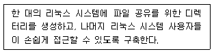
- NIS
- NFS
- IRC
- SAMBA
(정답률: 66%)
65. 다음 ( 괄호 ) 안에 들어갈 내용으로 알맞은 것은?
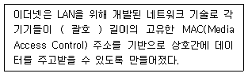
- 32bit
- 48bit
- 64bit
- 128bit
(정답률: 55%)
66. 다음 중 패킷 교환 방식에 대한 설명으로 틀린 것은?
- 고정 대역을 할당하지 않는다.
- 오버헤드 비트가 존재하지 않는다.
- 이론상으로 호스트의 무제한 수용이 가능하다.
- 회선 교환 방식에 비해 더 많은 지연이 발생 할 수 있다.
(정답률: 52%)
67. 다음 중 FTP 프로토콜이 사용하는 포트 번호를 확인할 때 사용하는 파일명으로 알맞은 것은?
- /etc/protocols
- /etc/services
- /etc/networks
- /etc/sysconfig/network
(정답률: 51%)
68. 다음 중 텔넷 명령을 사용해서 로컬 시스템의 웹 서비스를 점검하려고 할 때 관련 명령으로 알맞은 것은?
- telnet 80 localhost
- telnet -p 80 localhost
- telnet localhost 80
- telnet localhost:80
(정답률: 56%)
69. 다음 설명에 해당하는 LAN 구성 방식으로 알맞은 것은?
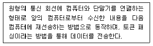
- 스타(Star)형
- 버스(Bus)형
- 링(Ring)형
- 망(Mesh)형
(정답률: 76%)
70. 다음 중 IP 주소 및 도메인을 관리하는 국제관리 기구로 알맞은 것은?
- ICANN
- EIA
- ITU
- IEEE
(정답률: 58%)
71. 다음 설명에 해당하는 TCP 프로토콜의 패킷으로 알맞은 것은?
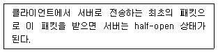
- RST
- SYN
- ACK
- SYN/ACK
(정답률: 61%)
72. 다음 중 삼바 서비스와 가장 관련이 깊은 프로토콜로 알맞은 것은?
- RPC
- IRC
- CIFS
- SNMP
(정답률: 61%)
73. 다음 설명에 해당하는 웹 브라우저로 알맞은 것은?
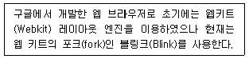
- 크롬
- 사파리
- 오페라
- 파이어폭스
(정답률: 78%)
74. 다음 설명과 관련 있는 파일로 알맞은 것은?
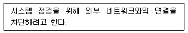
- /etc/hosts
- /etc/resolv.conf
- /etc/sysconfig/network
- /etc/sysconfig/network-scripts
(정답률: 53%)
75. 다음 설명과 관련 있는 파일로 알맞은 것은?
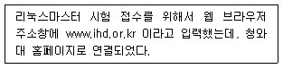
- /etc/hosts
- /etc/services
- /etc/sysconfig/network
- /etc/sysconfig/network-scripts
(정답률: 66%)
76. 다음 중 네임서버가 기록되어 있는 파일로 알맞은 것은?
- /etc/hosts
- /etc/resolv.conf
- /etc/sysconfig/network
- /etc/sysconfig/network-scripts
(정답률: 63%)
77. 다음 중 Docker에 관한 설명으로 틀린 것은?
- 서버 운영에 필요한 프로그램을 이미지로 만들어 프로세스처럼 동작시킨다.
- 하이퍼바이저를 사용하여 경량화된 게스트 운영체제 설치를 지원한다.
- 실행되는 이미지는 컨테이너(Container)라고하며 컨테이너 내부에 접속가능하다.
- 컨테이너는 이미지로 저장할 수 있고 외부저장소를 통해 배포가 가능하다.
(정답률: 54%)
78. 다음 중 리눅스 가상화 기술인 VirtualBox에 대한 설명으로 알맞은 것은?
- 인텔의 하드웨어 가상화 VT-x와 AMD의 AMD-V를 기반으로 전가상화를 지원한다.
- 게스트 운영체제의 하드디스크를 기본값으로 VMDK(Virtual Machine Disk)포맷으로 저장한다.
- 전통적인 하이퍼바이저 방식으로 호스트와 다른 아키텍처의 게스트는 실행할 수 없다.
- InnoTek에서 처음 개발 후 Sun Mircrosystems를 거쳐 현재는 RedHat사에 인수되었다.
(정답률: 44%)
79. 다음 중 리눅스에서 사용되는 클러스터로 틀린 것은?
- 고가용성 클러스터(HA)
- 고계산용 클러스터(HPC)
- 부하분산 클러스터(LVS)
- 완전무결 클러스터(AP)
(정답률: 71%)
80. 다음 설명하는 내용으로 가장 알맞은 것은?
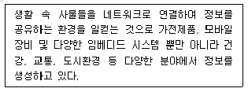
- DSP(Digital Signal Processor)
- PAM(Parallel Virtual Machine)
- IoT(Internet of Things)
- IVI(In-Vehicle Infotainment)
(정답률: 82%)